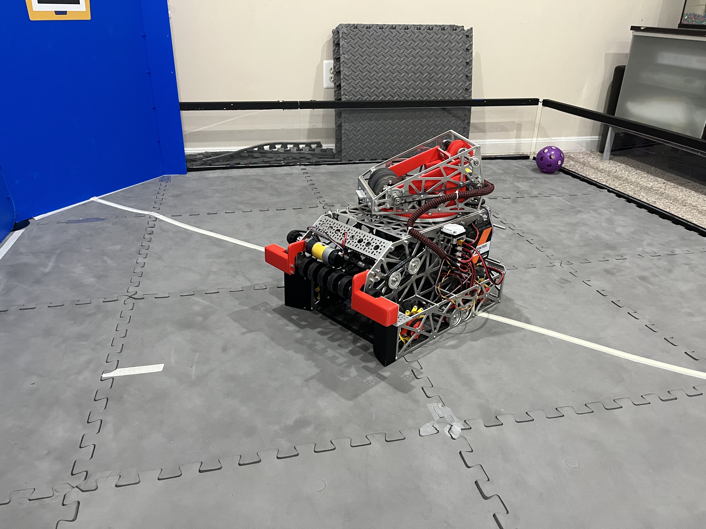
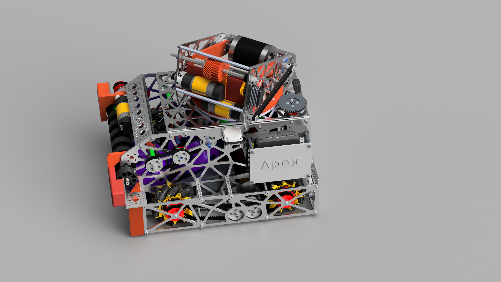
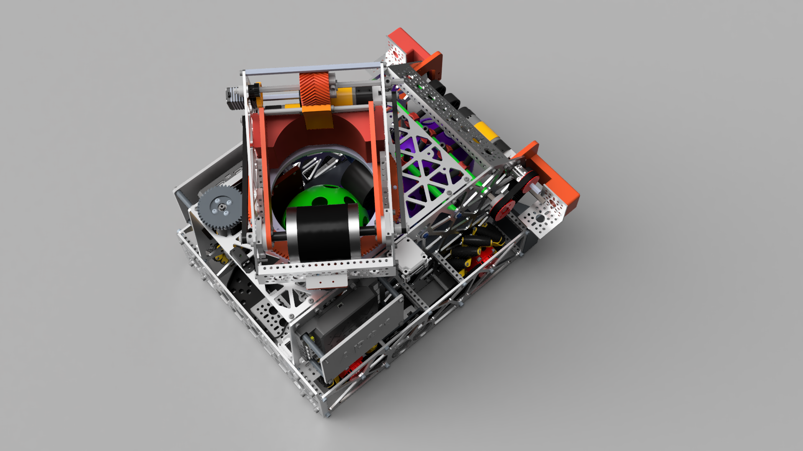

Design
Built for serviceability
The Onshape model prioritized practical assembly, accessible mechanisms, and efficient fabrication.
Offseason Robotics · 2026
A complete offseason robotics platform developed from CAD concept through fabrication, electronics, and Java controls.

Design
The Onshape model prioritized practical assembly, accessible mechanisms, and efficient fabrication.
Build
3D printing and hands-on fabrication translated the CAD into a working mechanical system.
Controls
Java software and control systems coordinate the robot's mechanisms and driver inputs.
Design visualization
Presentation renders created to communicate the complete mechanical design.


Build demonstration
A project demonstration video will be added after testing and filming are complete.
Planned: subsystem walkthrough, driver operation, and field testing.
Source code
View the Java codebase, controls development, and ongoing offseason work on GitHub.